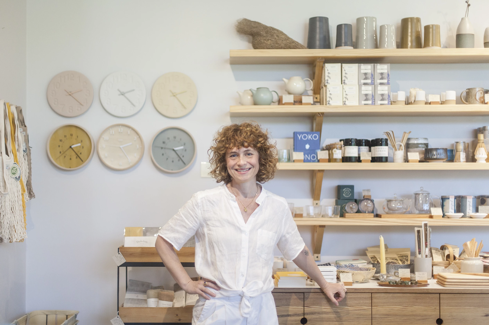

Opening a shop has been a dream I have had since childhood. I chose to take a risk pursuing this dream, which has been one of the best decisions I've made. This risk has taken courage, as most worthwhile things do, 'take heart' being an idiom which translates "to be confident or courageous."
'take heart' is a boutique located in East Austin which reflects my love of special and thoughtfully designed objects for the home and person. The shop showcases local and US artists, as well as a selection of international designers, with an emphasis on Japanese design. We believe in the importance of supporting small businesses and artists. We value the energy and craftsmanship put into the items we carry in our shop and our relationship with the makers/designers.
Our hope is that 'take heart' will inspire creativity, self-discovery and invite one to take time to appreciate life's beautiful details. We always love seeing our regulars and look forward to seeing those of you on your visit to Austin!
-Nina Gordon, Owner